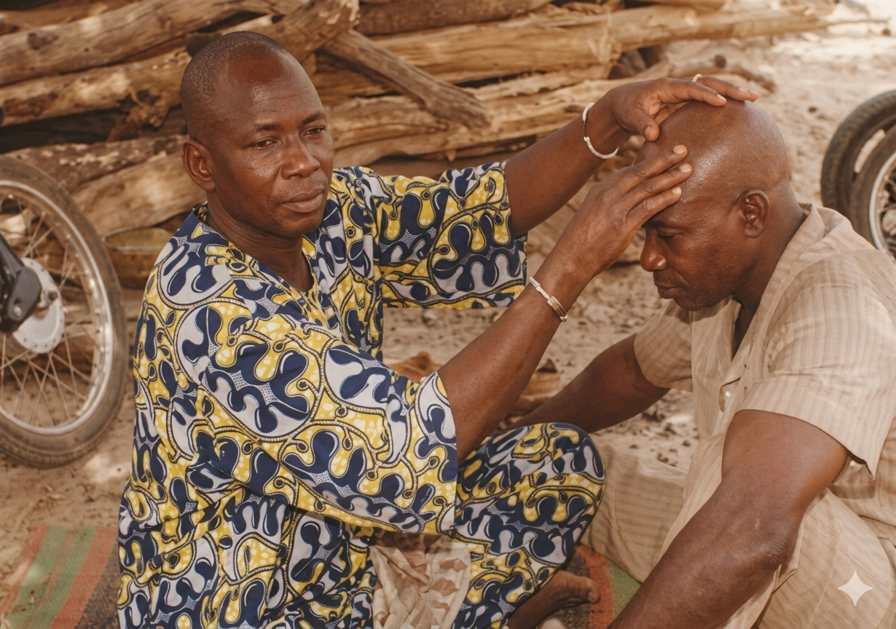
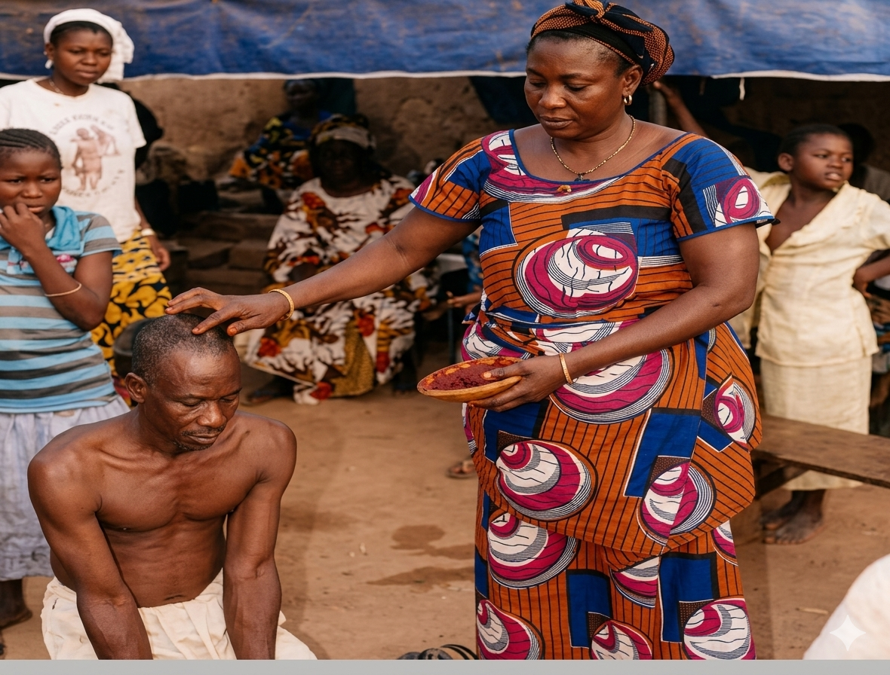
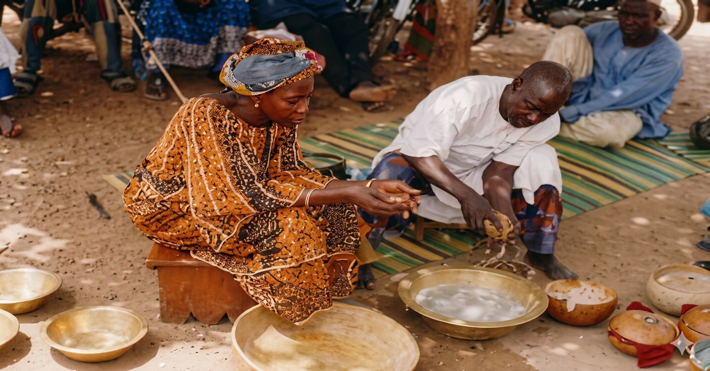
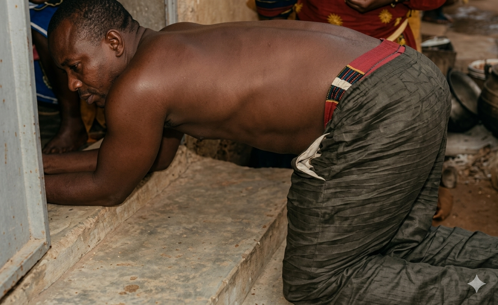
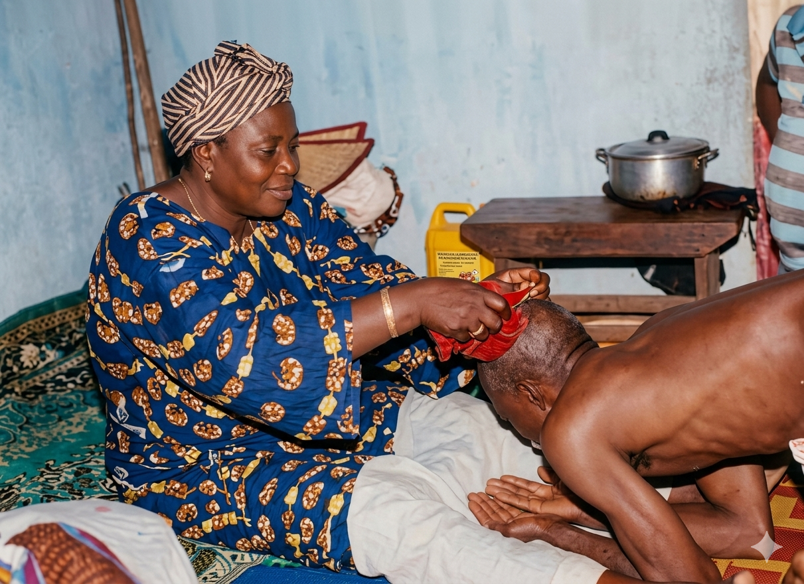
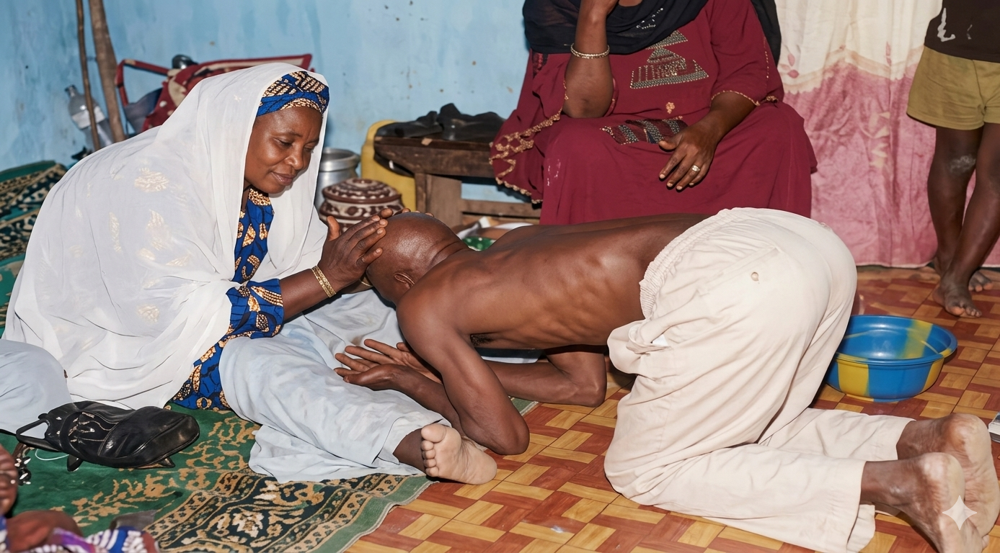
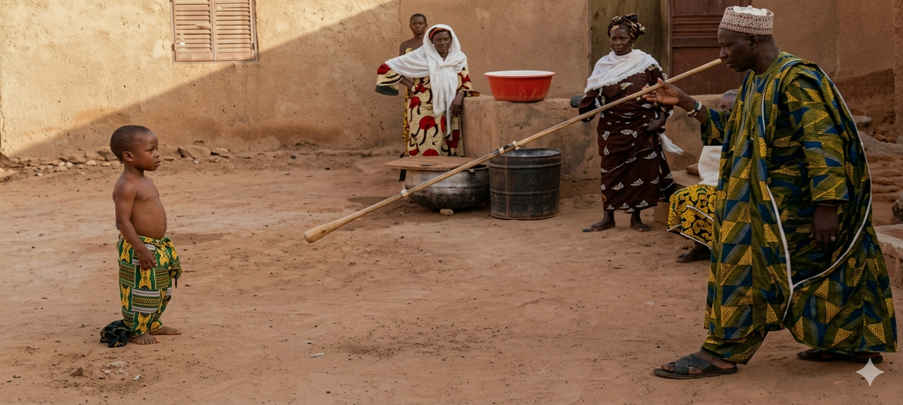

Un rite d'identité, de transmission et de reconnaissance sociale dans le Royaume de Nikki.
Lire l'article
Considéré comme un facteur essentiel de socialisation et de promotion sociale, le rasage princier constitue une pratique identitaire de nombreux groupes socioculturels béninois.
Ce rite séculaire structure la vie des Wassangari de Nikki et participe à la transmission des valeurs culturelles et historiques.
Considered as an essential factor of socialization and social promotion, princely shaving constitutes an identity practice among Beninese socio-cultural groups.
This secular ritual structures the lives of the Wassangari of Nikki and the Agassouvi of Abomey.
Le Bénin est un pays multiethnique et hétérogène. Chaque groupe social possède son propre système culturel et religieux.
Chez les Baatombu, les rites occupent une place fondamentale dans l'intégration sociale et dans la transmission des valeurs ancestrales.

Cette recherche est qualitative. Elle s'appuie sur l'observation, les entretiens et l'analyse documentaire.
Les acteurs interrogés comprennent les griots, les princes Wassangari, les dignitaires royaux et les personnes ressources.
Le baptême princier constitue un privilège important dans la société Baatonu. Il est généralement réalisé pendant la fête traditionnelle de la Gaani.





Le rasage princier chez les Wassangari représente bien plus qu'une simple cérémonie. Il constitue un symbole d'identité, de mémoire et de continuité culturelle.
Cette tradition permet aux générations futures de conserver le lien avec leurs ancêtres et leur patrimoine.